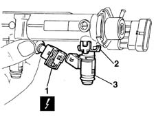

1056B70 injector (one) - r + r with fuel manifold pipe removed - includes seal replacemnt
- Path
- Procedures > 10 ENGINE UNIT > 1056 PETROL INJECTION SYSTEM > 1056B multi-point injection system (mpi) > 1056B70 injector (one) - r + r with fuel manifold pipe removed - includes seal replacemnt
- Kind
- repair procedure (removal / refitting; the operation number is the code)
- Applies to
- engines: 1.6 16v; all production periods
- Interactive page
- https://sloeber94.github.io/elrnDB-fMltpl/en/#/2891268
Applies to: engines: 1.6 16v; all production periods
 Removing
Removing
 Refitting
Refitting1. Disconnect the electric connection from the fuel injector.
 | Name | Connector |
|---|---|---|
1 | Injector |
2. Remove the safety clip.
3. Remove the press-fitted injector

Applies to: engines: 1.6 16v; all production periods
Refitting
RemovingReplace the seals before refitting.
Fit the injector into its seat on the manifold.
Fit the retaining clip.
Connect the electrical connection.
Topics linked from this page (1)
Topics that link to this page (13)
- B11 ENGINE STARTS WITH DIFFICULTY' / WHEN WARM
- B12 ENGINE STARTS WITH DIFFICULTY' / WHEN COLD
- D01 ENGINE NOT RUNNING SMOOTHLY / (HESISTANT)
- D02 ENGINE NOT RUNNING SMOOTHLY / (LOSING POWER)
- D10 ENGINE IDLE IRREGULAR
- D21 ENGINE CUTS OUT WHILST DRIVING
- W01 HIGH CO EMISSIONS
- W02 CO EMISSIONS LOW, NOx EMISSIONS HIGH
- W05 WHITE EXHAUST FUMES
- W10 BLACK EXHAUST FUMES
- W11 EXCESSIVE EXHAUST FUMES'
- X01 EXCESSIVE FUEL CONSUMPTION
- 1056B68 set of injectors - r + r with fuel manifold pipe removed - includes seal replacement